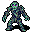
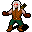

減速 Slow
英語版 CrawlWiki の記事「Slow」(0.33 向け、2025-10-13 版)の翻訳です。原文の著者は編集履歴をご覧ください。
この記事は 0.33 の時点の内容で、最新の 0.34 とは違うところがあるかもしれません。
- このページは状態異常についての記事だ。呪文については減速(呪文)を参照。
| あなたのあらゆる行動に50%長く時間がかかる。 |
減速は、あらゆる行動に通常の150%の時間がかかるようになる状態異常だ。
効果
減速した生き物は、どんな行動にも50%長く時間がかかる。そのため攻撃で与えるダメージが大きく落ちるうえ、減速した追っ手からはずっと逃げやすくなる(逆に、自分が減速しているとずっと逃げにくくなる)。
減速は水銀の攻撃や無力化の薬で消せる。加速の手段(スピードの薬やバーサークなど)でも減速を打ち消せ、端数の誤差なしに通常の速さに戻る。ただし、加速は減速の状態そのものを消すわけではなく、その効果を打ち消すだけだ。
フォーミシッドは停滞の体質のおかげで、この効果をまったく受けない。
原因
減速の呪文を唱える敵は次のとおり。
- n

湿地の屍骸 - 2 混沌の悪鬼
- e

闇エルフの射手 - x
 エリカ
エリカ - w
 ガストロノク
ガストロノク - S
 守護の大蛇
守護の大蛇 - H
 守護のスフィンクス
守護のスフィンクス - a
 帝国の護衛兵
帝国の護衛兵 - E
 鉄の精霊
鉄の精霊 - @
 ジェシカ
ジェシカ - @
 キルケー
キルケー - L
 リッチ
リッチ - h
 ナターシャ
ナターシャ - H
 スフィンクス
スフィンクス - i
 女呪術師
女呪術師


呪文セットによっては減速を唱えることがある敵は次のとおり。
- &
 パンデモニウムの君主(3.4% の確率)
パンデモニウムの君主(3.4% の確率)
ほかに、次のものでも減速することがある。
- 代謝の凍結とズホルの皮
- 瘴気の雲
- クラーレ毒を塗ったダーツ
- ケイブリアドスの現世の歪曲
- 混沌の効果
- ミイラの死の呪い
- 視界内にいる無気力の蝸牛
- 呪術の呪文の失敗
- 冷血の体で冷気のダメージを受けること
- 苛烈な神罰
- バーサークが切れたとき。ひいてはダチュラ毒を塗ったダーツの効果でも。
- レベル2の虚弱体質の変異
- 能力値ゼロ
なお、俊足は効果が切れると鈍足(-Swift)の状態になる。これは通常の減速と違い、移動速度だけを下げる。